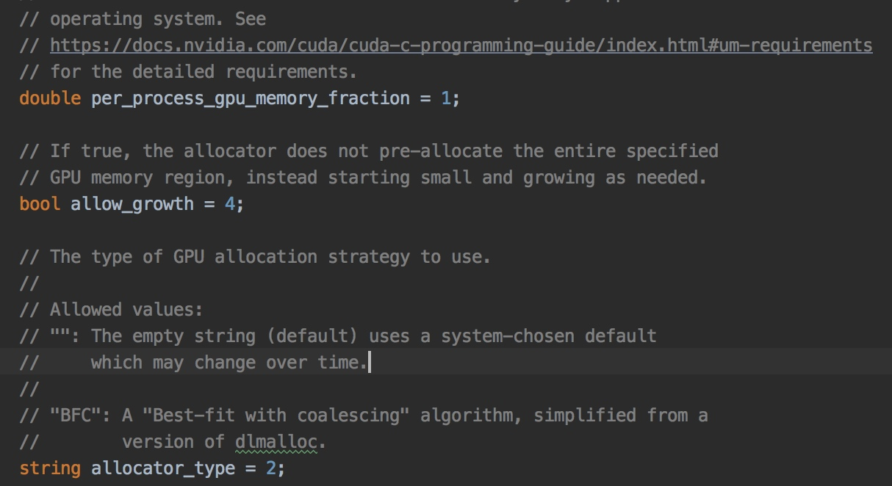
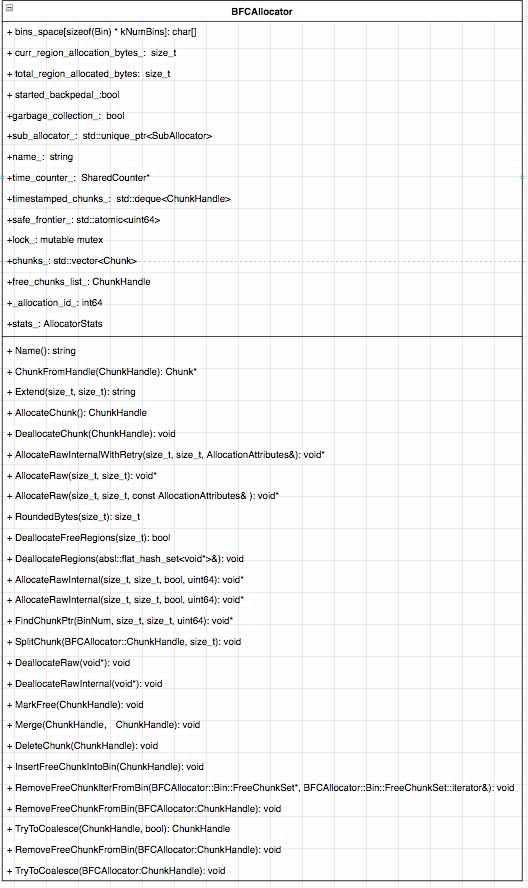

这段时间，工作当中杂事比较多，有点像充当产品经理，去给算法业务的同学去安利我们最近完成的一些东西，感觉自己几乎没啥提升，希望这样的日子快点过去，公众号也落下了，主要原因是最近事比较多，又加上还迷上了抖音 什么东北酱，周末一躺就过去了。加上最近网上暴力被裁事情、明星猝死，突然发现中年危机可能就要在眼前，作为最老一批90年后，也马上要30了，但是觉得荒废下去好像也是蛮爽的。哎，迷茫而惆怅的中年危机恐怕是真的要到来了。回到正题，好久没有写过技术文章，最近又开始在读XDL的代码，这次我重点关注在底层，真的觉得质量很高，无愧是阿里妈妈吗的工作，但是无奈基础太差，又加上XDL除了代码开头的license生命几乎没有一行注释， 这里如果有XDL的小伙伴看到，希望把注释补一补，东西是不错，但是也要考虑下我们的水平吧。
本章文章是看到XDL代码之后，发现它自己写了自己的内存管理，这块我之前完全不懂，google一波才明白一些，而TensorFlow本身其实也有一些memory allocation的工作，本章会详细说明下BFC这块的工作。
TensorFlow Memory Manage
BFC是Best fit with coalescing的缩写，下面截图是TensorFlow源码config.proto，其中有关于内存、显存管理的注释文档，BFC是dlmalloc的一个简化版本，DLmalloc是啥，大家不明白没关系，直接理解为内存分配上一个特别硬核的工作，当前很多内存分配的算法很多受其影响。【memory allocate是操作系统下特别复杂的一项工作，如要系统了解，建议读读下OS经典教材memoey manage的几章】。

TensorFlow Memory Allocator
BFCAllocator
TensorFlow针对不同的设备，比如cpu下的mkl的allocator，cuda下的allocator，其实现都是有很大的差异的。本文不可能一一详述，仅针对bfc_allocator相关的逻辑进行描述，由于作者在这块经验较少，有任何发现疑问以及问题的请在评论区留言，大家来一起讨论
Allocator: Abstract interface for allocating and deallocating device memory
class Allocator {
public:
static constexpr size_t kAllocatorAlignment = 64;
virtual ~Allocator();
virtual string Name() = 0;
virtual void* AllocateRaw(size_t alignment, size_t num_bytes) = 0;
virtual void* AllocateRaw(size_t alignment, size_t num_bytes,
const AllocationAttributes& allocation_attr) {
return AllocateRaw(alignment, num_bytes);
}
virtual void DeallocateRaw(void* ptr) = 0;
virtual size_t RequestedSize(const void* ptr) const {
CHECK(false) << "allocator doesn't track sizes";
return size_t(0);
}
virtual size_t AllocatedSize(const void* ptr) const {
return RequestedSize(ptr);
}
virtual int64 AllocationId(const void* ptr) const { return 0; }
virtual size_t AllocatedSizeSlow(const void* ptr) const {
if (TracksAllocationSizes()) {
return AllocatedSize(ptr);
}
return 0;
}
virtual absl::optional<AllocatorStats> GetStats() { return absl::nullopt; }
virtual void ClearStats() {}
virtual void SetSafeFrontier(uint64 count) {}
};
struct AllocationAttributes {
AllocationAttributes() = default;
AllocationAttributes(bool no_retry_on_failure, bool allocation_will_be_logged,
std::function<uint64()>* freed_by_func)
: no_retry_on_failure(no_retry_on_failure),
allocation_will_be_logged(allocation_will_be_logged),
freed_by_func(freed_by_func) {}
bool no_retry_on_failure = false;
bool allocation_will_be_logged = false;
std::function<uint64()>* freed_by_func = nullptr; // Not owned.
TF_DISALLOW_COPY_AND_ASSIGN(AllocationAttributes);
};
struct AllocatorStats {
int64 num_allocs; // Number of allocations.
int64 bytes_in_use; // Number of bytes in use.
int64 peak_bytes_in_use; // The peak bytes in use.
int64 largest_alloc_size; // The largest single allocation seen.
absl::optional<int64> bytes_limit;
int64 bytes_reserved; // Number of bytes reserved.
int64 peak_bytes_reserved; // The peak number of bytes reserved.
absl::optional<int64> bytes_reservable_limit;
AllocatorStats()
: num_allocs(0),
bytes_in_use(0),
peak_bytes_in_use(0),
largest_alloc_size(0),
bytes_reserved(0),
peak_bytes_reserved(0) {}
string DebugString() const;
};
TensorFlow 内存分配与回收的抽象接口，封装Name, AllocateRaw, DellocateRaw, TracksAllocationSize, AllocatesOpaqueHandle, RequestedSize, AllocatedSize, AllocationId, AllocatedSizeSlow, GetStats, ClearStats, SetSafeFrontier。
这些逻辑作为父类的纯虚接口，由子类去实现，BFCAllocator的详细接口信息如下：

在此之前，BFCAllocator下的两个比较重要的数据结构， Chunk和Bin，两者之间的关系如下图，看起来像一个个糖葫芦，第一个bin size为256<<1， 第二个为256<<2, 一次类推，TF内有21个bin，最后bin size 为256 << 21为512MB，每一个bin下面会接下若干个大于bin size的chunk，整个内存空间由以下的结构来组织，当分配内存大小指定时，系统会遍历bin，找到能够第一次满足chunk > bin_size,每一个bin下的chunk是有序的（Bin下的ChunkComparator）

Chunk

struct Chunk {
size_t size = 0;
size_t requested_size = 0;
int64 allocation_id = -1;
void* ptr = nullptr; // pointer to granted subbuffer.
ChunkHandle prev = kInvalidChunkHandle;
ChunkHandle next = kInvalidChunkHandle;
BinNum bin_num = kInvalidBinNum;
// Optional count when this chunk was most recently made free.
uint64 freed_at_count = 0;
bool in_use() const { return allocation_id != -1; }
string DebugString(BFCAllocator* a,
bool recurse) NO_THREAD_SAFETY_ANALYSIS {
string dbg;
strings::StrAppend(
&dbg, " Size: ", strings::HumanReadableNumBytes(size),
" | Requested Size: ", strings::HumanReadableNumBytes(requested_size),
" | in_use: ", in_use(), " | bin_num: ", bin_num);
if (recurse && prev != BFCAllocator::kInvalidChunkHandle) {
Chunk* p = a->ChunkFromHandle(prev);
strings::StrAppend(&dbg, ", prev: ", p->DebugString(a, false));
}
if (recurse && next != BFCAllocator::kInvalidChunkHandle) {
Chunk* n = a->ChunkFromHandle(next);
strings::StrAppend(&dbg, ", next: ", n->DebugString(a, false));
}
return dbg;
}
};
Bin

struct Bin {
// All chunks in this bin have >= bin_size memory.
size_t bin_size = 0;
class ChunkComparator {
public:
explicit ChunkComparator(BFCAllocator* allocator)
: allocator_(allocator) {}
bool operator()(const ChunkHandle ha,
const ChunkHandle hb) const NO_THREAD_SAFETY_ANALYSIS {
const Chunk* a = allocator_->ChunkFromHandle(ha);
const Chunk* b = allocator_->ChunkFromHandle(hb);
if (a->size != b->size) {
return a->size < b->size;
}
return a->ptr < b->ptr;
}
private:
BFCAllocator* allocator_; // The parent allocator
};
typedef std::set<ChunkHandle, ChunkComparator> FreeChunkSet;
FreeChunkSet free_chunks;
Bin(BFCAllocator* allocator, size_t bs)
: bin_size(bs), free_chunks(ChunkComparator(allocator)) {}
};
分配内存
- rounded_bytes: 保证内存对齐；
- BinNumForSize(rounded_bytes):找到对应的BinNum；
- MergeTimestampedChunks: 如果timestamped_chunks_不为空， （required_bytes==0,这里还不是特别理解， 有理解清楚的可以在文章后面评论），则合并；
- FindChunkPtr:
- 找到第一个满足rounded_bytes的bin；
- 从free_chunks中删除大于rounded_bytes的chunk， 从free_chunks移除；
- 若chunk大小为rounded_bytes的两倍,或者chunk大小比rounded_bytes 大128mb以上， 会将chunk split成满足rounded_bytes和剩余大小的chunk, 然后将后者插入合适bin的free_chunks；
- 如果FindChunkPtr没找到合适的chunk，则尝试Extend
- 如果available_bytes<rounded_bytes，则返回false；
- 如果当前curr_region_allocation_bytes_小于rounded_bytes,则curr_region_allocation_bytes翻倍，直到满足大于rounded_bytes;
- 调用sub_allocator来分配内存块，分配bytes大小为min(rounded_bytes, curr_region_allocation_bytes)， 若未能成功分配，则一直尝试分配0.9*bytes， 若最后也未分配成功，则extend失败；
- 分配好内存块之后，创建对应的chunk，这个chunk里保存了，内存块地址等信息，并将chunk插入到对应bin；
- 如果Extend也fail了， 则再次尝试MergeTimestampedChunks来是否满足round_bytes, （这里会聚合最近释放的内存块，直到满足rounded_bytes）;
若再次MergeTimestampedChunks之后还是无法分配合适的内存块，系统会再次尝试释放已经free的regions，然后尝试extend来满足是否能满足分配rounded_Bytes， 如还是fail，则返回空指针，Allocate 失败；
void* BFCAllocator::AllocateRawInternal(size_t unused_alignment, size_t num_bytes,
bool dump_log_on_failure,
uint64 freed_before) {
if (num_bytes == 0) {
VLOG(2) << "tried to allocate 0 bytes";
return nullptr;
}
size_t rounded_bytes = RoundedBytes(num_bytes);
BinNum bin_num = BinNumForSize(rounded_bytes);
mutex_lock l(lock_);
if (!timestamped_chunks_.empty()) {
MergeTimestampedChunks(0);
}
void* ptr = FindChunkPtr(bin_num, rounded_bytes, num_bytes, freed_before);
if (ptr != nullptr) {
return ptr;
}
if (Extend(unused_alignment, rounded_bytes)) {
ptr = FindChunkPtr(bin_num, rounded_bytes, num_bytes, freed_before);
if (ptr != nullptr) {
return ptr;
}
}
if ((freed_before == 0) && (!timestamped_chunks_.empty())) {
if (MergeTimestampedChunks(rounded_bytes)) {
ptr = FindChunkPtr(bin_num, rounded_bytes, num_bytes, freed_before);
if (ptr != nullptr) {
return ptr;
}
}
}
if (DeallocateFreeRegions(rounded_bytes) &&
Extend(unused_alignment, rounded_bytes)) {
ptr = FindChunkPtr(bin_num, rounded_bytes, num_bytes, freed_before);
if (ptr != nullptr) {
return ptr;
}
}
释放内存
- 首先，判断ptr是否为空指针，如是，则不作后续操作；
- region_manager_.get_handle(ptr) 找到对应chunkhandle, 然后将handle标记为free，具体有application_id赋值为-1， 若timing_counter_为true，则记录释放内存时间；
调用InsertFreeChunkIntoBin，将已标记为free的chunk插入到合适的Bin中，释放内存完成；
void BFCAllocator::DeallocateRawInternal(void* ptr) { if (ptr == nullptr) {
VLOG(2) << "tried to deallocate nullptr";
return;
}
mutex_lock l(lock_);
// Find the chunk from the ptr.
BFCAllocator::ChunkHandle h = region_manager_.get_handle(ptr);
CHECK(h != kInvalidChunkHandle);
MarkFree(h);
// Consider coalescing it.
if (timing_counter_) {
InsertFreeChunkIntoBin(h);
timestamped_chunks_.push_back(h);
} else {
InsertFreeChunkIntoBin(TryToCoalesce(h, false));
}
if (VLOG_IS_ON(4)) {
LOG(INFO) << "F: " << RenderOccupancy();
}
}
读源码的方法
我发现看懂了一部分代码之后，再写出来就显得很简单，这个对于读者不是什么好事情，很多小伙伴很有心地去阅读某些框架的底层源码，但是很多时候理解不了，下面我分享给小伙伴几个方法：
- 专项学习某些知识点，比如你看的源码部分是memory manager，你可以去找一些国内外教材、教学视频， 先理解清楚其中概念；
- 至少完整看两遍代码：第一遍，不要嫌麻烦，将每个类的所有的成员函数、成员变量画出来，更给力的是讲类间的关系引用也画出来；第二遍，再逐个函数把逻辑理清楚；
- 看完之后建议写篇文章来描述下，以后忘记了再稍微看看能搞清楚；
感兴趣的家庭作业
XDL代码里面有其他不同的allocator如buddy_allocator, slab_allocator, slab_buddy_allocator，如果有人感兴趣可以按照我前面提的方法来理解下这几块内容，大家一起学习、讨论。